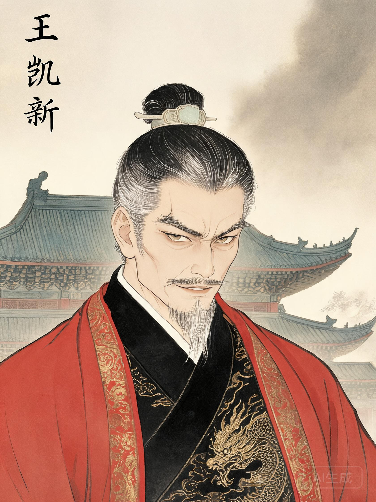
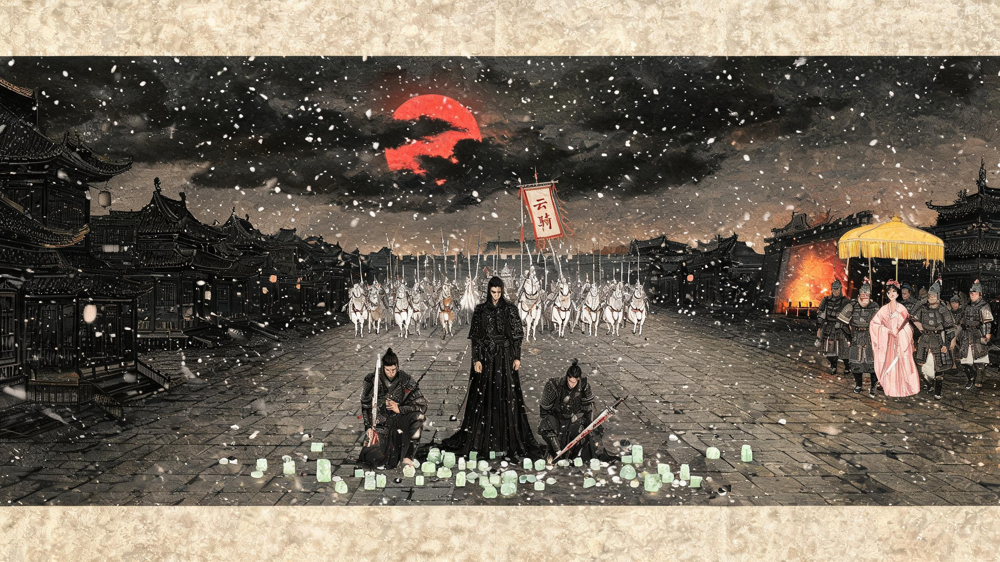

大虞双姝权谋录
壹项目缘起与对标Origin & Reference
把一段情感丰沛的权谋群像，扩写为可沉浸、可选择、可重玩的网页游戏。
1.1 故事底本
附件《大虞双姝权谋录 · 完整故事》是 5 卷正典：北疆走散 → 入皇城 → 换婴 → 宫墙春 → 灯下误 → 庵院月 → 长街火 → 各归其位。涉及 11 位核心人物、横跨北疆/皇城/东境/庵院四地，情感线 6 组、权谋线 4 条、出场即高潮场景 8 处。是一份天然的"群像剧"母本。
1.2 技术对标：ashfall
你之前用 workbuddy 纯 AI 做的 Ashfall / 灰烬城（v2.0.3）作为技术参考：
- 前端：Vite + React 18 + TypeScript
- 后端：Cloudflare Pages Functions + D1（SQLite）
- 服务端防作弊：所有世界内容（区域 / NPC / 任务 / 隐藏 / 结局）只在服务端，前端只渲染与发请求
- 多周目循环、cost / keeps / tone_color 结局机制
本项目将 完全继承该技术栈与防作弊范式，把"区域 + NPC 树状"换为"卷章 + 多视角 + 关系网"。详见 第拾章。
1.3 与 ashfall 的核心差异
| 维度 | Ashfall（参考） | 大虞双姝（本项目） |
|---|---|---|
| 玩家身份 | 单一主角，废土求生 | 局外"江湖客"，不入 NPC 之位 |
| 叙事结构 | 开放区域自由探索 | 卷章制 + 多视角切换 + 关键节点分支 |
| 核心驱动 | 物资 / 战斗 / 信任度 | 关系网 / 线索 / 抉择 / 知情权 |
| 战斗系统 | 有 | 无（剧情向，战斗仅作叙述） |
| 结局 | 5 结局 | 1 标准 + 6 IF/隐藏 = 7 结局 |
贰核心定位Player Role & Narrative Spine
玩家是云游谋士，与各派有谊、却不入任何一方。可落子，可不落。
2.1 玩家身份 · 云游谋士（已定稿）
2.2 玩家身份设计的游戏性
- "陶淮"是剧情人物：在所有 NPC 眼中，玩家都有名有姓、过往可查。不是匿名过客，而是"我识得你，你也识得我"。
- "云游谋士"是可落子的身份：信任度达到阈值时，玩家可以主动给某位核心人物提一条建议——是否被采纳由玩家此前的行为与对方性格决定。
- "陶淮"有过去：在东境幕府三月是玩家的"暗债"——王凯新记得陶淮、潘婷对陶淮有旧谊、孙佳琪与陶淮是至交。这些旧关系决定了每个 NPC 见到玩家时的第一反应。
- "云游"是自由度的隐喻：玩家可以选择在某卷"主动介入"或在另一卷"袖手旁观"，同一身份的不同行为会留下完全不同的名声。
2.3 玩家与剧本的"穿插"机制
陶淮不是旁观者读旁白，而是 以"谋士"之身在关键时刻自然嵌入：
- 卷一首入：在北疆古道与孙佳琪重逢，替她推演"换婴"布局的疏漏
- 卷二穿梭：以"游学士子"身份入皇城，在元宵诗会旁听时与张文静有过一面之缘
- 卷三在场：作为潘婷旧友，在庵院撞见潘婷与袁月私话
- 卷四伏兵：与袁魁、郭文韬同在庵院暗处，见证潘婷醒悟
- 卷五落子：在长街暗处推演宫变全局，王凯新被擒后与其"对坐而谈"（独白）
2.4 玩家"知情权"作为核心机制
这是本游戏最有游戏性的设计 —— 玩家（陶淮）知道的比任何单个人物都多：
- 陶淮在 卷一 就知道孙佳琪与张文静是走散的姐妹
- 陶淮在 卷三 庵院段就已知"换婴"真相
- 陶淮在 卷五 才知道王凯新与自己曾在东境幕府有过三月之谊——这是王凯新悲剧的"第二把刀"：他至死以为"我送出去的人都不回来"，却不知陶淮是自愿离开的
- 陶淮可以 选择是否告知 袁魁 / 杨鑫 / 潘婷 / 张文静 等关键角色
因此玩家的每个"沉默"或"开口"都是高权重选择——沉默 = 让悲剧重演，开口 = 改写历史。这正是经典 IF（互动小说）的乐趣核心。
叁角色卡（杨鑫独立重塑后）Character Cards
12 位核心人物（含玩家陶淮），1 位彻底重塑（杨鑫），1 位强化其悲剧（王凯新）。
孙佳琪
与妹妹张文静北疆走散，女扮男装入皇城成袁魁陪读，权倾一时后被胞姐潘婷构陷"假死"北疆。机敏、果断、念旧。整盘棋的 操盘者。
张文静
北疆被王府诓走，沦为王凯新宠妾，后被献予袁魁。温婉、能抚琴、是孙佳琪与宫中所有线索的连接人。与袁魁日久生情。
袁月
实为先皇亲女，被换婴寄养镇北将军府，14 岁入宫为侍女。与国师潘婷相爱，共同收养潘沛鑫。不知自己是真公主，是全剧情感张力最大的人物。
潘婷
孙佳琪胞姐，最年轻国师。爱上袁月后，因袁魁那份"情愫"产生执念，为给袁月"名分"而攀权走火。悲剧核心：她的每一步都出于"爱"，却走成了"夺权"。
袁魁
14 岁继位，聪慧却孤。孙佳琪的灵魂知己，张文静的最终归宿。误以为对袁月有情，实为血缘牵引。整盘棋的 最终落子者。
杨鑫 [独立重塑]
与王凯新无任何关联：非其子、非其质、非其旧部。身世来历完全独立：北疆流民遗孤，自幼被云游道人收养于华山学艺，十八岁入京受袁魁赏识，凭一身本事从云骑小兵升任都尉。性格孤傲、寡言、守义，不识人情而通剑理。是孙佳琪的"暗棋"——孙佳琪识其才，主动将他纳入麾下情报网。
新增支线：① 华山学艺往事（道人的身世谜）；② 追查自身身世（流民遗孤的来历）；③ 与孙佳琪的暗盟（情报网核心节点）；④ 一段说不出口的情（卷末伏笔，玩家可选择是否促成）。
刘旸
真公主袁月的"替身"，自幼被当作公主教养。嫁与王凯新为和亲，在王府里发现了换婴之秘，凭一封密信破局。勇敢、隐忍、有担当。
孙少男
刘旸的青梅恋人，也是"陪嫁"刘旸入王府的精兵首领之子。刘旸在王府的"自己人"，是里应外合的关键。
郭文韬
流落途中救了"假死"的孙佳琪，论政契合，渐生情愫。立誓助她拨乱反正。宫变收网的核心谋士。
王凯新 [强化悲剧]
东境藩王，野心与薄情兼备。与杨鑫无任何关系——既非父子、亦非旧识。在他眼中，世间只有两种人：可用的棋子与该弃的弃子。张文静、刘旸、王府旧部皆入此列。终局必须是"最凄凉悲惨"：宫变失败、囚室中无人探视、临刑前夜独对铁链回想"这一世送出去多少枚棋子，竟没一个回来看我"，最终身败名裂、家国两空。
新增支线：王凯新视角的"棋子账本"独白——他至死不解"为何所有被我送出去的人，没一个回来"；他不知道，因为他送出去时就没问过对方愿不愿意。
潘沛鑫
因袁月宫中繁忙，自幼跟着生火下厨，练得一身好手艺。长大后偶然听了张文静抚琴，拜其为师。全剧最暖的存在，是庵院里的饭香与除夕擦灯人。
肆剧情扩写：五卷新纲Story Spine · Five Acts
原 5 卷基础上，每个卷章扩出 2-3 个"可游玩章节"，并加入"杨鑫改写线"与"王凯新悲剧强化线"。
4.1 全卷时间线
卷一 · 北疆雪
孙佳琪与张文静走散；孙佳琪入皇城；杨鑫幼年入宫；先皇崩。换婴之秘。玩家在北疆古道初遇孙佳琪，是否愿替她带一封密信入皇城？
卷二 · 宫墙春
张文静入宫；密信破局（其一）；灯下三人结谊。玩家以新科进士身份在元宵诗会旁听，与张文静有一面之缘。
卷三 · 灯下误
潘婷执念加深；孙佳琪自北疆归来揭真相；袁魁梦醒。玩家作为庵院香客，撞见潘婷与袁月私话。
卷四 · 庵院月
杨鑫设计掳潘婷出宫；庵院对谈；袁魁现身许名分。玩家是否在此时向潘婷多透露一句"王凯新已在路上"？
卷五 · 长街火
主帅之战（杨鑫率云骑都尉府 vs 王凯新）；收网；空的人质；囚室对坐；各归其位。玩家在长街暗处推演全局，王凯新悲剧终局在此章完结。
4.2 扩写重点
4.2.1 杨鑫独立支线（新增 3 章 · 已与王凯新解耦）
- 《华山问道》：杨鑫幼年于华山随道人学剑，道人临终告知他身世线索——"你不是北疆人，你父母死于一场旧案"。玩家（陶淮）若在卷一与杨鑫结交，可成为他身世之谜的共同追查者。
- 《暗盟》：杨鑫入京受袁魁赏识后，被孙佳琪识才，主动将其纳入麾下情报网。杨鑫从"江湖游侠"变为"朝堂暗卫"，其内心挣扎是这一章核心。玩家（陶淮）作为孙佳琪的至交，被邀见证"暗盟之约"。
- 《一段说不出口的情》：杨鑫卷末的情感伏笔（不与王凯新关联），对象是 潘婷？张文静？刘旸？ —— 由玩家在分支中决定，触发 3 个不同支线结局。
4.2.2 王凯新悲剧强化线（新增 2 章 + 1 隐藏片段 · 父子之战已改写）
- 《棋子列传》：王凯新视角，列出他一生送出的"棋子"——张文静（献予袁魁）、刘旸（和亲）、王府旧部（派去刺杀）、陶淮（曾是幕府谋士，但陶淮是自己走的）。至死账本仍未合上。
- 《铁链回想》：囚室独白，回忆他送出棋子时从不问对方愿不愿意的张文静、刘旸、王府旧部——这一夜他第一次想"如果当年问过一句会怎样"。这是他"最凄凉"的根因——不是输给了对手，而是输给了自己的人性。
- 隐藏片段《末路》：临刑前夜，铁链哗啦，他梦回东境幕府三月——梦里陶淮还在，他问"你为何走"，陶淮答"你不问我愿不愿意"。这是玩家全游中最重的一行字。只有陶淮（玩家）本人在囚室门口才触发。
- 改写后的"长街之战"：王凯新与朝堂联军（袁魁 + 孙佳琪 + 郭文韬 + 杨鑫率领的云骑都尉府）正面对决。杨鑫是主帅，不是对手。父子之战 → 主帅之战。
4.2.3 其余角色补全
| 角色 | 扩写内容 | 游戏机制关联 |
|---|---|---|
| 张文静 | 北疆入王府前的童年；与孙佳琪的"糖葫芦"暗语；抚琴名曲《北疆谣》 | 琴声作为线索收集载体 |
| 刘旸 | 王府内如何发现换婴之秘；与孙少男的暗语体系 | 解谜玩法（拼合密信碎片） |
| 郭文韬 | 救孙佳琪之前的人生；为何入京赶考；状元及第的暗流 | 玩家可选择是否成为他与孙佳琪的"红娘" |
| 潘沛鑫 | 在潘婷与袁月身边的成长；厨艺 / 琴艺的师承 | 厨房 / 琴房作为可探索场景 |
| 镇北将军 | 为何答应换婴；质子之约的代价；对袁月（亲生）与刘旸（养女）的不同 | 北疆场景的 NPC 群 |
伍玩家穿插机制：局外人卷轴Player Insertion · Bystander Codex
玩家的存在感由"穿插点 + 知情权"两层构成。
5.1 玩家穿插点（每卷 3-4 个）
自然嵌入
玩家身份与场景自然匹配（古道旅人 / 进士考生 / 香客 / 街边小贩 / 说书人），不强行穿越、不破坏叙事。
关键对话旁听
在张文静抚琴时旁听其心事；在庵院撞见潘婷与袁月私话；在长街暗处听父子对刀声。
主动对话（高权重）
玩家可主动向任何一位核心人物发起 1-2 句关键对白——但 NPC 只在信任度达到阈值时才会"听懂"或"接受"。
沉默权
玩家 可以全程沉默，只看戏、只选"我不动声色"。这同样是一种有分量的选择，触发"局外人清冷"结局风格。
5.2 知情权规则
玩家在每个章节开始，会看到一段"局外人手记"——以说书人语气揭示该章节中"玩家知道但 NPC 不知道"的信息。这是 IF 文学里经典的framing device。
这意味着：玩家必须决定何时开口 / 对谁开口 / 开口到什么程度。沉默会让悲剧重演，开口会改变历史——但每次开口都会留下"暴露痕迹"，可能被反派 NPC（潘婷 / 王凯新）警觉。
陆分支矩阵与因果网Branching Matrix
约 35 个高权重分支点、110 个剧情节点。
6.1 关键分支点（节选 10 个）
↔ 表格支持横纵滚动，建议横向滑动查看完整内容
| # | 卷 | 分支点 | 选择 A | 选择 B | 选择 C |
|---|---|---|---|---|---|
| 01 | 卷一 | 替孙佳琪推演"换婴"布局的疏漏？ | 指出 → 提前封堵隐患 | 不指 → 标准开局 | 反问布局本身 → 触发"质问者"线 |
| 02 | 卷一 | 是否在华山道上遇见杨鑫？ | 遇见 → 后续可同查身世 | 未遇 → 杨鑫线独立 | 给一道护身符 → 改变杨鑫卷三处境 |
| 03 | 卷二 | 元宵诗会上是否与张文静对诗？ | 对诗 → 触发"琴瑟和鸣"暗线 | 沉默 → 标准进程 | 暴露陶淮旧识身份 → 触发潘婷警觉 |
| 04 | 卷二 | 是否向袁魁暗示"对袁月是血缘"？ | 暗示 → 袁魁提前释怀 | 不暗示 → 拖至卷三 | 明示 → 暴露换婴之秘（高风险） |
| 05 | 卷三 | 庵院时是否多嘴一句？ | 多嘴 → 潘婷提前醒悟 | 不多嘴 → 庵院对谈照常 | 完全沉默 → 进入"冷眼"结局风格 |
| 06 | 卷三 | 孙佳琪归来时，玩家（陶淮）是否在场？ | 在场 → 可参与"换婴之秘"告白 | 不在场 → 通过旁听获得 | 主动求见 → 提升孙佳琪信任 |
| 07 | 卷四 | 潘婷是否吐露"王凯新已在路上"？ | 全盘托出 → 潘婷安心 | 部分托出 → 潘婷仍有牵挂 | 只字未提 → 庵院收束但暗流未消 |
| 08 | 卷五 | 主帅之战，玩家（陶淮）可选择是否献计？ | 献计 → 减少伤亡 | 不献 → 杨鑫按原计划应战 | 提出"生擒王凯新"→ 触发《囚室对坐》 |
| 09 | 卷五 | 王凯新囚室独白，玩家（陶淮）是否在门外？ | 在门外 → 听到《铁链回想》 | 不在 → 只能从袁魁处转述 | 推门而入 → 触发隐藏线《末路》 |
| 10 | 卷五 | 是否在末路中答"你不问我愿不愿意"？ | 答 → 王凯新临刑前夜彻底崩 | 不答 → 王凯新至死带着疑问 | 沉默 → 触发"清冷收束"风格 |
6.2 因果关系网（Mermaid）
flowchart LR P1[玩家 陶淮
卷一] -->|是否指疏漏| P2[封堵换婴] P2 --> P3[杨鑫身世线] P2 --> P4[标准开局] P1 -->|是否华山遇杨鑫| P5[杨鑫线同查] P5 --> P6[卷三杨鑫处境] P7[卷二 诗会] -->|是否暗示血缘| P8[袁魁提前释怀] P7 -->|是否对诗| P9[琴瑟暗线] P8 --> P10[卷三庵院] P10 -->|多嘴| P11[潘婷提前醒悟] P10 -->|沉默| P12[冷眼结局] P11 --> P13[卷四收束] P12 --> P13 P13 --> P14[卷五主帅之战] P14 -->|是否献计| P15[主帅之战方式] P14 -->|是否提生擒| P16[囚室对坐] P15 --> END1((标准结局)) P16 --> P17{是否在门外} P17 -->|在| END2((隐藏末路)) P17 -->|不在| P18[清冷收束] P18 --> END1 END1 --> M[多周目解锁] END2 --> M classDef player fill:#faf6ec,stroke:#8b1a1a,stroke-width:2px,color:#1a1410; classDef npc fill:#ebe1ce,stroke:#1f3a4d,color:#1a1410; classDef ending fill:#8b1a1a,stroke:#8b1a1a,color:#faf6ec,stroke-width:3px; class P1,P2,P5,P7,P10,P13,P14 player; class P3,P4,P6,P8,P9,P11,P12,P15,P16,P17,P18 npc; class END1,END2,M ending;
6.3 关系网（Mermaid）
flowchart TB TH[陶淮 玩家] ---|至交| S[孙佳琪] TH ---|撰策论| G[郭文韬] TH ---|占星旧谊| P[潘婷] TH ---|数面之缘| Y[袁魁] TH ---|旧识 幕府三月| W[王凯新] TH ---|同查身世| X[杨鑫] S ---|走散姐妹| Z[张文静] S ---|双胞胎| P S ---|灵魂知己| Y S ---|暗盟主| X Z ---|最终归宿| Y Z ---|入王府| W Z ---|琴徒| F[潘沛鑫] P ---|执念之爱| M[袁月] P ---|共养| F M ---|母爱| F X ---|主帅| Y X ---|情| XQ[未说出口] Y ---|血缘牵引误读| M Y ---|使君| Z L[刘旸] ---|青梅恋人| SN[孙少男] L ---|假公主| Y L ---|嫁与| W L ---|密信| Z G ---|谋士| Y classDef player fill:#faf6ec,stroke:#8b1a1a,stroke-width:3px,color:#1a1410; classDef good fill:#faf6ec,stroke:#1f3a4d,color:#1a1410; classDef evil fill:#faf6ec,stroke:#8b1a1a,color:#1a1410,stroke-width:2px; classDef mid fill:#ebe1ce,stroke:#6b5e4f,color:#1a1410; class TH player; class S,Z,Y,X,M,L,G,F,SN,P good; class W evil; class XQ mid;
柒结局矩阵：标准 + 6 IF/隐藏Ending Matrix
1 个标准 + 6 个 IF/隐藏 = 7 种终局。每种都有 cost / keeps / tone 三维度。
7.1 结局一览（ECharts 分布）
7.2 结局矩阵
| # | 结局 | 触发条件 | Tone | Cost | Keeps |
|---|---|---|---|---|---|
| 01 | 正典 · 各归其位 标准结局 | 玩家沉默 / 关键节点正常推进；潘婷在庵院醒悟 | 温暖·欣慰 | 王凯新身死、潘婷归隐、杨鑫孤身 | 孙佳琪与袁魁知己、袁魁与张文静厮守、刘旸与孙少男成婚、潘婷与袁月无名有实 |
| 02 | 铁链回想 IF · 强化王凯新悲剧 | 玩家在囚室外听到独白 + 选择告知杨鑫不姓王 | 凄凉·悲悯 | 王凯新至死不知"杨"姓含义、玩家背负"知情却未救"的余味 | 王凯新得到文学意义上最完整的悲剧收束、杨鑫完成"自立" |
| 03 | 末路 隐藏 · 推门而入 | 玩家在分支点 09 选择"推门而入" | 冰冷·孤绝 | 玩家目睹王凯新梦呓"鑫儿"全过程，自己内心无法释怀 | 解锁"末路"回忆录、开启第二周目特别章节 |
| 04 | 冷眼观棋 IF · 局外人清冷 | 玩家全程沉默 / 知情度 ≥ 阈值但从不开口 | 清冷·疏离 | 所有悲剧照常发生（玩家未救） | 玩家获得"大虞旁观者"称号、解锁"棋局复盘"全视角 |
| 05 | 北疆糖葫芦 IF · 完美救赎 | 玩家在卷一主动帮孙佳琪寻回张文静 + 后续多个正向选择 | 纯真·圆满 | 孙佳琪未"假死"、潘婷未走火入魔、王凯新无机和亲 | 姐妹未走散、张文静未入王府、杨鑫养母未被杖毙（改变历史最深的 IF） |
| 06 | 国师未醒 IF · 潘婷黑化 | 玩家在庵院段选择"沉默"且未在卷四前铺垫、潘婷执念彻底吞噬 | 灰暗·遗憾 | 宫变失败、袁月身死、潘婷与王凯新同归于尽、玩家目睹最爱之人逝去 | 杨鑫手刃王凯新、孙佳琪与袁魁共治、孙少男与刘旸逃往北疆 |
| 07 | 庵院灯火 隐藏 · 周目二解锁 | 达成标准结局 + 多周目继承关键线索 + 至少 1 个 IF 条件 | 温柔·延续 | 无新增损失 | 解锁"潘婷视角"、"袁月视角"、"杨鑫视角"三条补充章节，揭示庵院之后十年的故事 |
7.3 王凯新"最凄凉悲惨"结局的执行要点
- 他送出的棋子没一个"自愿"——张文静被献、刘旸被和亲、王府旧部被派去死地
- 他以为"所有被我送出去的人都不回来"——但陶淮是自己走的，他至死不知
- 他至死不解"为什么没人回来"——因为他送出去时从不问对方愿不愿意
- 临刑梦回东境幕府，陶淮（玩家）答"你不问我愿不愿意"——这是王凯新悲剧的"终极一刀"
- 杨鑫与他无任何关联，因此王凯新连"错失儿子"的悔都没有——他的悔只剩下"为什么所有人都被我推走"
捌玩法系统设计Gameplay Systems
8.1 核心系统
① 关系网
11 位核心人物 × 玩家 信任度，影响对话解锁、支线触发、结局分流。每人物 0-100 信任值，关键阈值 30 / 60 / 90。
② 线索日志
收集"密信/旧灯/北疆姜汤/换婴信物"等关键道具。日志自动整理为 人物 × 线索 × 卷章 三维索引，可点击跳回相关章节。
③ 知情度
玩家专属维度：你已知道多少。知情度过低 → 关键节点无选项；过高 → 触发"是否开口"的隐藏选项。
④ 多周目继承
周目二起可继承"暗线视角"（潘婷 / 袁月 / 杨鑫 第一人称补充章节）；周目三起解锁"全知者"模式（同时显示所有 NPC 内心独白）。
⑤ 局外人手记
每章开头一段"说书人"语气独白，揭示玩家已知而 NPC 未知的信息。设计为可关闭 / 可重读 / 可分享到社交平台。
⑥ 解谜玩法（轻量）
拼合密信碎片、辨认换婴信物、解读《北疆谣》琴谱。3-5 个核心解谜，服务端硬编码答案，F12 改不了。
8.2 数值面板示意（ECharts）
8.3 章节结构模板
每章固定为 5 段式：局外人手记 → 场景入画 → 2-3 个对话 / 选择点 → 节点结算 → 章末卷轴（一段说书人收束）。平均阅读时长 8-12 分钟。
玖美术、音乐与沉浸Aesthetic Direction
国风古韵、文学向、克制用色；不追求 3D 与炫技，专注"读得到字、看得见情"。
9.0 AI 资产首批样本（seedream）
本节展示由 trae-remote-official:seedream 生成的 4 张首批占位资产 —— 2 张核心立绘、2 张关键场景。正式版将以这些为风格基线，扩展至 11 位人物立绘 + 5 卷场景图 + 高光场景视频。


9.0.1 高光场景视频样本（seedance）
由 trae-remote-official:seedance 生成的 8 秒一镜到底视频，用于卷五主帅之战开场。正式版将为 5 卷高光场景各做 1-2 段关键镜头视频（庵院月、卷三多嘴、华山问道、王凯新末路等）。
9.1 视觉
- 风格：水墨淡彩 + 工笔人物立绘；UI 以墨色 + 朱砂 + 黛青为主
- 字体：标题用 YoungSerif / Noto Serif SC；正文用 Lora / Noto Serif SC；引文用斜体衬线
- 立绘：11 位核心人物 × 2-3 种情绪立绘，先以 AI 风格化占位（明代工笔淡彩风），后期可替换为正式约稿
- 场景插图：每卷 1 张全景卷轴图（卷一北疆雪 / 卷二皇城灯 / 卷三庵院竹 / 卷四庵院月 / 卷五长街火）
9.2 音乐
- 卷章主题：每卷一段古风纯器乐主旋律（古琴 / 笛 / 鼓），3-4 分钟
- 角色主题：孙佳琪（笛 · 江湖气）、潘婷（古琴 · 执念）、袁月（箫 · 内敛）、王凯新（编钟 · 沉重）
- 环境音：北疆风雪、皇城夜更、庵院竹雨、长街铁蹄
拾技术选型与对 ashfall 的复用Tech Stack & Reuse
完全继承 ashfall 的成功范式，在其上做"群像 + 卷章"特化。
10.1 技术栈
| 层 | 技术 | 说明 |
|---|---|---|
| 前端 | Vite + React 18 + TypeScript | 与 ashfall 一致，UI 组件库改用自研 + shadcn/ui 简化版 |
| 后端 | Cloudflare Pages Functions | API 端点 + 中间件 + 服务端校验 |
| 数据库 | Cloudflare D1 (SQLite) | 玩家存档 / 信任度 / 知情度 / 线索 / 周目 |
| 静态资源 | Cloudflare Pages CDN | 图片 / 音乐 / 字体 |
| 部署 | Git 集成 / wrangler deploy | 推送即上线 |
10.2 服务端防作弊（核心）
所有剧情相关数据 只存在服务端。前端只能：
- 渲染服务端返回的"当前场景"
- 提交"玩家选择"并接收下一场景
- F12 改本地状态 无效，因为下一次请求会被服务端拒绝
10.3 API 端点设计（参考 ashfall 14 个）
| 端点 | 作用 | 对应 ashfall |
|---|---|---|
| /api/session/start | 创建存档（昵称 / 性别 / 来历） | 对应注册 |
| /api/chapter/load | 加载章节内容（场景 / 对话 / 选项） | 对应 /api/move |
| /api/chapter/choose | 提交选择，服务端校验并返回结果 | 对应 /api/quest/accept |
| /api/dialogue/speak | 玩家主动对 NPC 说话，校验信任度 | 对应 /api/talk |
| /api/clue/pickup | 拾取线索，服务端校验 | 对应 /api/pickup |
| /api/puzzle/submit | 解谜提交，答案硬编码在服务端 | 对应 /api/puzzle |
| /api/trust/update | 更新信任度（服务端规则） | 信任度机制 |
| /api/ending/check | 校验当前是否能进入某结局 | 对应 /api/ending/choose |
| /api/ending/choose | 提交结局选择 | 对应 /api/ending/choose |
| /api/ending/keep | 周目继承开关 | 对应 v2.0.3 多周目 |
| /api/coda/load | 加载"局外人手记" / 章末卷轴 | 对应 cost-keeps 面板 |
| /api/admin/* | 后台：玩家分布 / 结局分布 / 章节流失率 | 对应 admin 视图 |
| _middleware.ts | 全局 5xx 兜底 + 安全头 | 复用 |
| /api/asset/music | 按需流式加载背景音乐 | 新增 |
10.4 数据模型（核心表）
| 表 | 关键字段 | 说明 |
|---|---|---|
| players | id, nickname, gender, origin, created_at | 玩家档案 |
| saves | player_id, current_chapter, cycle, endings_unlocked | 周目存档 |
| trust | player_id, npc_id, value | 11 位 NPC 信任度 |
| knowledge | player_id, clue_id, known_at | 知情度（线索收集） |
| choices | player_id, chapter_id, branch_id, picked, picked_at | 历史选择 |
| endings | id, code, name, tone, cost, keeps, trigger_rules | 结局定义 |
| chapters | id, vol, code, title, scene, dialogue_tree, branches | 章节内容（服务端硬编码） |
| npcs | id, name, role, trust_thresholds, dialogue_unlock | NPC 配置 |
拾壹里程碑与交付计划Milestones
M1 = 剧本扩写完成 · M2 = 技术骨架就绪 · M3 = 一周目可玩
M1 · 剧本定稿
- 五卷扩写正文（每卷 5-8 章）
- 110 个剧情节点完整对话树
- 35 个分支点决策文案
- 7 个结局完整剧本
- 11 份角色卡 + 杨鑫改写后独白
- 王凯新"末路"隐藏片段
- 潘婷视角 / 袁月视角 / 杨鑫视角补充章节
M2 · 技术骨架
- 项目脚手架（Vite + Functions + D1）
- 14 个 API 端点 + 中间件
- 8 张核心数据表 + 迁移脚本
- 服务端剧情配置加载器
- 前端"局外人手记 + 场景 + 对话"渲染组件
- 服务端防作弊校验全链路
- 测试体系（vitest）
M3 · 一周目可玩
- 卷一 / 卷二 完整可玩
- 1 个标准结局 + 2 个 IF 结局可触发
- 关系网 / 线索日志 / 知情度三系统
- 占位美术 + 临时音乐
- Cloudflare Pages 首次部署上线
- 三 / 四 / 五卷
- 多周目继承
拾贰决策记录与下一步Decisions Log & Next Step
本轮已对齐的 4 项关键决策，与待继续的细节。
12.1 本轮已决策项（v0.2 锁定）
| # | 决策项 | 本轮结论 |
|---|---|---|
| 1 | 王凯新 ↔ 杨鑫 关系 | 彻底无关联：非父子、非质子、非旧识、非师徒。杨鑫改为北疆流民遗孤 + 华山道人收养 + 18 岁入京 + 孙佳琪暗盟。父子之战改写为主帅之战。 |
| 2 | 玩家身份 | 云游谋士 · 陶淮（字公望）：江南书香门第，弱冠后游学天下。曾为孙佳琪出谋划策、替郭文韬撰过策论、帮潘婷占过星象，与袁魁有数面之缘，与王凯新有旧识（东境幕府三月）。身份不低，但不入任何一方。 |
| 3 | 上线策略 | 全量五卷 + 7 结局一次性发布。M3 阶段不发布试玩版，直接做齐。 |
| 4 | 美术 / 音乐 / 视频资产 | 调用 trae-remote-official:seedream + trae-remote-official:seedance 生成。立绘、场景插图用 seedream；高光场景（庵院月、父子之战、王凯新末路）用 seedance 生成短视频片段；文字以纯文学化对白为骨。 |
12.2 仍待你拍板的小项
- 玩家身份细节：陶淮的"容貌 / 口音 / 习惯"——给 3-5 个固定模板（书生 / 剑客 / 道士 / 商贾 / 医生）让玩家选，还是完全由我定一个？
- IF"北疆糖葫芦"：完美救赎线做还是不做？做的话是单独章节（>30 分钟），还是卷一首章的"隐藏小分支"？
- 杨鑫"一段说不出口的情"：对象由玩家在分支中决定（潘婷/张文静/刘旸），还是我先定一个更稳定的人物羁绊？